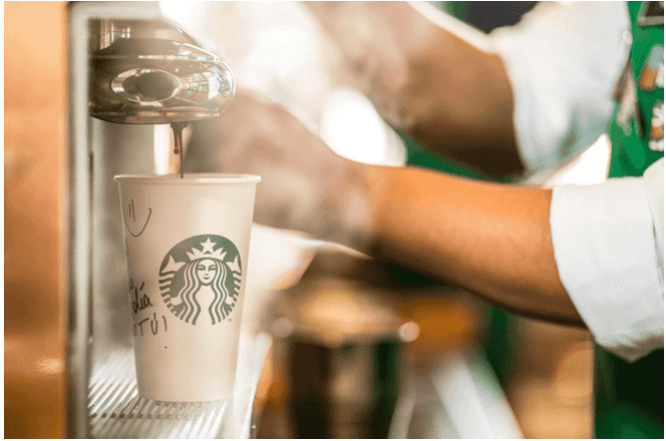
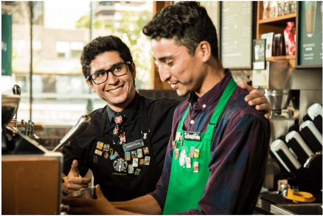

Inspirar y nutrir el espíritu humano: Una persona, una taza y una comunidad a la vez.
Estos son los principios que rigen el cumplimiento de nuestra misión día a día:
Nuestro café
Siempre ha sido y será una cuestión de calidad. Nos apasiona saber que tenemos un compromiso social y responsable con los proveedores de los mejores granos de café, y buscamos esmerarnos en tostar los granos y mejorar la vida de la gente que los cultiva. Nuestro profundo interés, en todos estos aspectos, hace que nuestro trabajo jamás termine.

Nuestros partners
Se nos llama partners porque lo que hacemos no es sólo un trabajo, es nuestra pasión. Juntos, adoptamos la diversidad para crear un lugar que nos permita a cada uno ser auténtico. Siempre nos tratamos con respeto y dignidad. Nos valoramos de acuerdo a este principio.

Nuestros clientes
Cuando nos entregamos de lleno a lo que hacemos, nos relacionamos con nuestros clientes, reímos con ellos y les levantamos el ánimo, aunque sea por un instante. Es cierto que comenzamos nuestro trabajo con la promesa de una bebida preparada a la perfección, pero es mucho más que eso. En realidad, se trata de relacionarnos con las personas.
Nuestras tiendas
Cuando nuestros clientes logran experimentar esta sensación de pertenencia, nuestras tiendas pasan a ser un refugio, un alto a las preocupaciones de afuera y un lugar para reunirse con los amigos. Se trata de disfrutar al mismo ritmo la vida: a veces pausado y con tiempo para saborearlo, otras veces más acelerado, pero siempre rodeados de auténtico calor humano.
Nuestra comunidad
Cada tienda forma parte de una comunidad y tomamos en serio nuestra responsabilidad como buenos vecinos. Queremos ser bienvenidos donde sea que hagamos negocios. Somos capaces de contribuir positivamente porque trabajamos para conseguir una unión entre partners, clientes y comunidad para cooperar cada día a día. Ahora nos damos cuenta de que la dimensión de nuestra responsabilidad y que nuestro potencial para hacer el bien son aún mayores que antes. Una vez más, el mundo espera que Starbucks dicte la nueva pauta. Seremos líderes.
Nuestros accionistas
Sabemos que cuando cumplimos con estas áreas, cosechamos el mismo éxito que recompensa a nuestros accionistas. Responderemos íntegramente por la perfección de cada uno de estos elementos, para que Starbucks y todos los que se relacionan con nosotros, podamos perdurar y prosperar.
Declaración de misión sobre el medio ambiente
En Starbucks tenemos el compromiso de desempeñar una función de liderazgo medioambiental en todas las facetas de nuestro negocio.
Cumplimos esta misión con el compromiso de:
Es nuestro compromiso por realizar negocios de manera que contribuyamos positivamente con todos y con nuestro planeta, desde la manera en la que compramos el café y disminuimos el impacto en nuestro ambiente, hasta la forma en la que nos involucramos con nuestras comunidades. Es hacer las cosas como siempre las hemos hecho y es usar toda nuestra fuerza para hacerlo bien. Y gracias a que estás con nosotros, vos también formas parte de Starbucks TM Shared Planet TM. Más que café, pasión por mejorar el mundo.